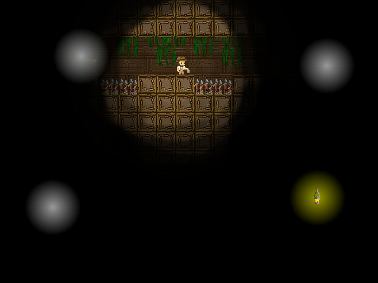

Tenebris

Overview
Two adventurers venture into an ancient tomb in a search for treasure. With nothing but their lamplight guiding them they enter in. But not all is as it seems. The lights of former adventurers guide them but the tomb reconfigures itself over and over. A game developed by members of ASU's Software Developer's Association for the Ludum Dare 31 Game Jam where I served as Project Lead, Programmer, and Artist.